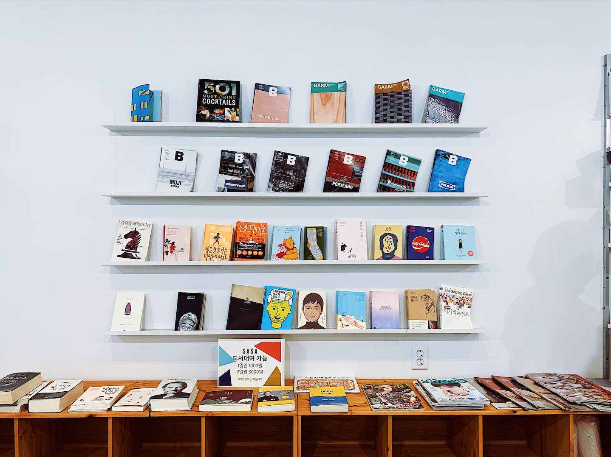

-

Floor 0 / Piso 0
Floor Zero is a sanctuary for free thinkers and those who dare to challenge authority. It is an anarchist library that houses a vast collection of books, manuscripts, and radical literature. Immerse yourself in the wisdom of anarchist thinkers from the past and present. Discover philosophical treatises, historical accounts of resistance, and manifestos that call for a world without hierarchy. From Emma Goldman to Murray Bookchin, the shelves are lined with the voices of those who have fought for autonomy and liberation. Floor Zero is more than just a repository of knowledge—it's a space for community engagement and collective action. Join discussions, workshops, and study groups where individuals come together to explore alternative systems and envision a world based on voluntary cooperation and mutual aid.
//O Piso Zero é um santuário para pensadores livres e aqueles que ousam desafiar a autoridade. Isto é uma biblioteca anarquista que abriga uma vasta coleção de livros, manuscritos e literatura. Mergulhe na sabedoria dos pensadores anarquistas do passado e do presente. Descobrir tratados filosóficos, relatos históricos de resistência e manifestos que pedem um mundo sem hierarquia. De Emma Goldman a Murray Bookchin, as prateleiras estão repletas de com as vozes daqueles que lutaram por autonomia e libertação. Floor Zero é mais do que apenas um repositório de conhecimento - é um espaço para a comunidade engajamento e ação coletiva. Participe de discussões, workshops e grupos de estudo onde indivíduos se reúnem para explorar sistemas alternativos e imaginar um mundo baseado em cooperação voluntária e ajuda mútua.